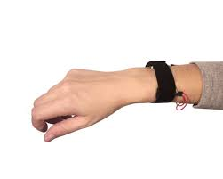

Project
 ◦ Designed a web application with chatbot to process queries related to covid-19 cases
◦ Trained the model on dialogflow to compare covid-19 cases based on dates and geographical location
◦ Awarded as a Best Team Builder for creating an encouraging environment for teammates to collaborate
◦ Designed a web application with chatbot to process queries related to covid-19 cases
◦ Trained the model on dialogflow to compare covid-19 cases based on dates and geographical location
◦ Awarded as a Best Team Builder for creating an encouraging environment for teammates to collaborate
◦ Ranked 25 metrics used for bug localization using sample of 2000 test suites assuming flakiness of test cases
◦ Compared the metrics using p-values obtained by Wilcoxon test on mean value of effort of each metric
◦ Analyzed the results obtained graphically and compared the ranking obtained with test cases without flakiness

◦ Fabricated wristbands that help us navigate to given destination using the Haptics nudge provided by bands
◦ Bands are controlled by Arduino connected with mobile via serial communication
◦ Awarded as Best Innovative Project by Science & Technology Council, IIT Kanpur among 60 projects